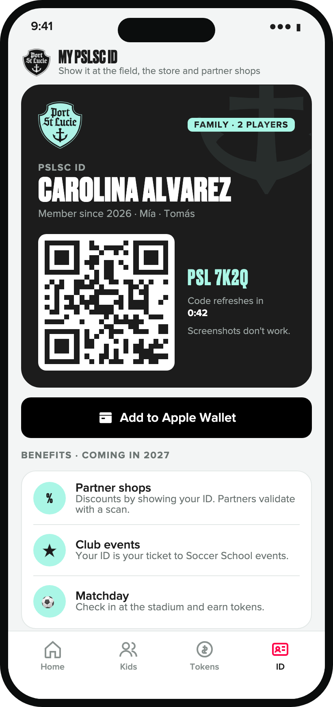
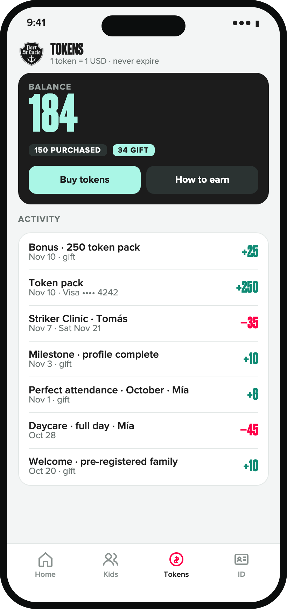

Port St. Lucie SC
PSLSC ID
La cuenta del club
Para la School hoy, para todo el club mañana.



03 · Cómo lo vive una familia
Se inscribe, entrena, gana y vuelve.



Pantallas ilustrativas en inglés, el idioma del producto. Rangos de edad, packs y precios son de ejemplo hasta que el club los defina.
03 · Cómo lo vive el club
Cinco pantallas y cero planillas.
La coordinadora crea las actividades una vez. Los cobros entran solos. El coach abre la lista en el teléfono y marca presentes en 30 segundos.
Actividades. Grupos, horarios, sedes, coach y cupos.
Socios. Cada familia, sus hijos y lo que tienen activo.
Asistencia. La lista del día, con contacto y notas médicas.
Hitos. Qué acciones regalan tokens y cuánto.
Movimientos. Cobros y compras, con cierre diario.

El club es dueño de la relación y de la plata: los cobros entran a nombre del club y los datos son del club.
04 · Etapa 2 · Abril a julio 2027 (estimado)
Etapa 2: la misma cuenta sirve para el hincha.


También en esta etapa: la School a fondo (lista de espera, eventos exclusivos, reportes), la versión bilingüe y los avisos.
Let's build PSLSC ID.
La cuenta del club. Para la School hoy, para todo el club mañana.
Arquitectura, reglas completas de los tokens, notificaciones, pantallas y alcance por etapa.
yacare.io
contact@yacare.io